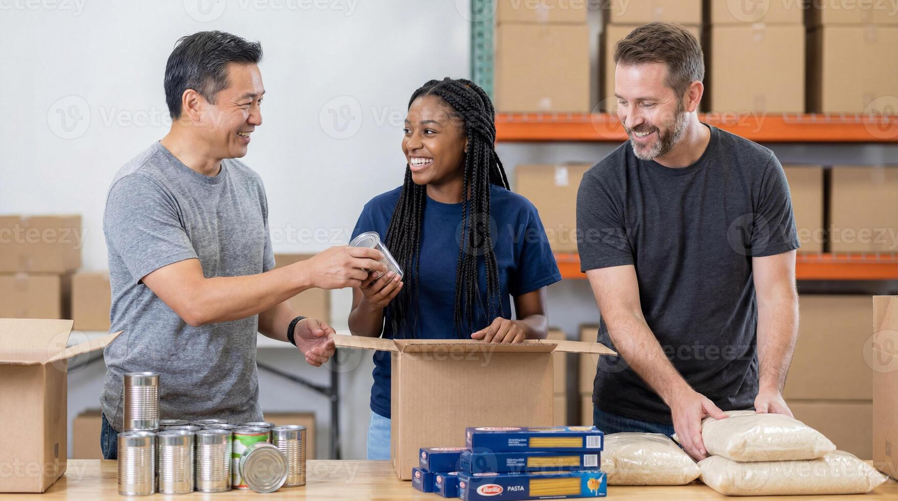

Real Life Peer Mentoring
The Real Life program pairs university and high school mentors with refugee and at-risk youth in local communities. Together, they focus on life skills, language development, and academic success.
- Weekly Mentoring Sessions
- Financial Literacy Workshops
- Cultural Integration Activities
Community Partnerships

Before traveling abroad, every Youthlinc student dedicates 60 to 80 hours of hands-on service right here at home. We partner with local food pantries, senior centers, and homeless shelters.
- Food Pantry Distribution
- Senior Center Companionship
- Community Garden Restoration
Utah Youth Leadership
We believe in building tomorrow's leaders today. Our students plan their own service projects, manage volunteer committees, and develop deep civic responsibility through structured workshops.
- Project Management Skills
- Public Speaking Practice
- Diversity and Inclusion Training
Frequently Asked Questions
Learn more about how our local service requirement shapes lifetime humanitarians.
- Why is local service required before international travel?
- Youthlinc believes that humanitarianism starts at home. By serving locally first, students build empathy, learn how to collaborate with diverse communities, and understand that service is a lifestyle, not a vacation.
- What is the Young Humanitarian Award?
- This annual award celebrates outstanding Utah students who demonstrate an exceptional, long-term commitment to giving back to their local communities.
- How are local service hours tracked?
- Students log their volunteer hours through our online portal, which must be signed off by site coordinators at our approved local nonprofit partner locations.
For more statistics on volunteerism in America, visit the AmeriCorps Official Website.